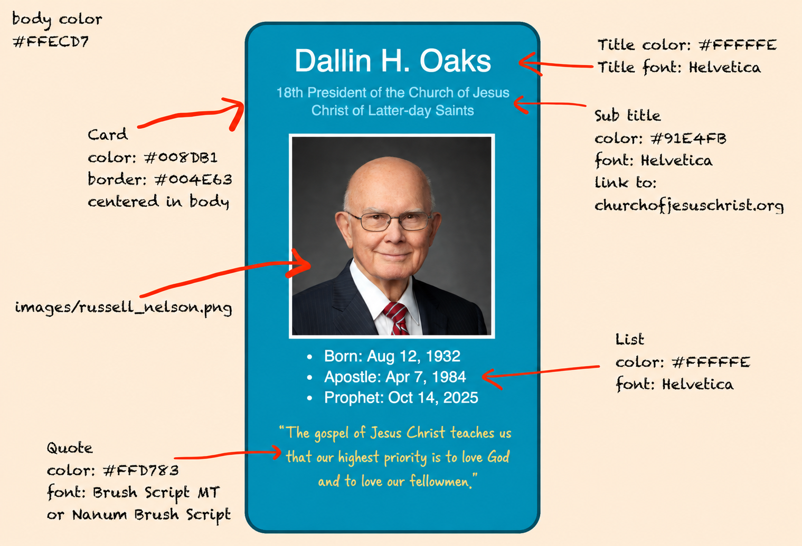

WEB Fundamentals
WDD 130
ICE Challenge: Prophet Cards
Overview
- Task: Design a profile card of a prophet.
- Purpose: Practice basic html and css and follow a simple wireframe design.
- Expectation: ICE Challenges are designed to be completed in less than an hour. See what you can complete in an hour and then submit it.
- Try adding cool, creative, clever features to enhance the challenge if you have time.
Instructions
-
Open the files
Download Starter files
Start by downloading the image file: Prophet Image and saving it in a prophet_cards folder in your ice folderOpen in VS Code
Open the prophets_cards folder in VS Code and open to edit.
-
Convert Design to Code
Follow Wireframe
Locate the file prophetcard_wireframe_oaks.png and view the image. Follow the wireframe model and in oaks.html create the html and css code according to the wireframe. Here is the image:
-
Submit
The URL that takes you directly to your prophet card web page.
Do Not submit a Live Server URL
Do Not submit a GitHub repository URL (NOT 'github.com', your link should have 'github.io')
Your link should look something like this:
yourusername.github.io/wdd130/ice/prophet_card.html